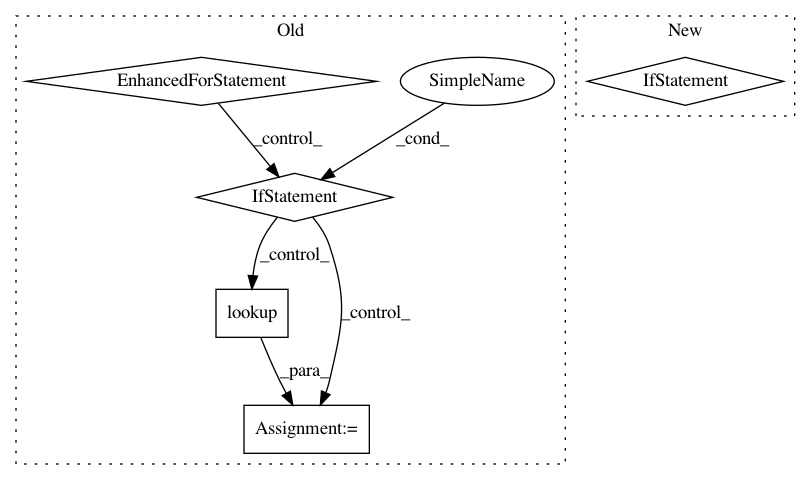

41c99fbf385a8c875fb6181ce7301e4bc218535b,autokeras/keras_layers.py,CategoricalEncoding,call,#CategoricalEncoding#Any#,58
Before Change
def call(self, inputs):
inputs = nest.flatten(inputs)[0]
outputs = []
for index in range(len(self.encoding)):
col = tf.slice(inputs, [0, index], [-1, 1])
if self.encoding[index] in [INT, ONE_HOT]:
col = self.tables[str(index)].lookup(col)
col = tf.cast(col, tf.float32)
else:
col = tf.strings.to_number(col, tf.float32)
outputs.append(col)
outputs = tf.concat(outputs, axis=-1)
outputs.set_shape(inputs.shape)
return outputs
After Change
split_inputs = tf.split(input_nodes, [1] * len(self.encoding), axis=-1)
output_nodes = []
for input_node, encoding_layer in zip(split_inputs, self.encoding_layers):
if encoding_layer is None:
output_nodes.append(tf.strings.to_number(input_node, tf.float32))
else:
output_nodes.append(tf.cast(encoding_layer(input_node), tf.float32))
return tf.keras.layers.Concatenate()(output_nodes)
def adapt(self, data):
for index, encoding_layer in enumerate(self.encoding_layers):
In pattern: SUPERPATTERN
Frequency: 3
Non-data size: 5
Instances
Project Name: keras-team/autokeras
Commit Name: 41c99fbf385a8c875fb6181ce7301e4bc218535b
Time: 2020-04-18
Author: jhfjhfj1@gmail.com
File Name: autokeras/keras_layers.py
Class Name: CategoricalEncoding
Method Name: call
Project Name: commonsense/conceptnet5
Commit Name: 79d149dd39dc7e7d22c623c0a4a4d3ab99e61c76
Time: 2017-06-15
Author: joanna.teresa.duda@gmail.com
File Name: conceptnet5/vectors/transforms.py
Class Name:
Method Name: choose_small_vocabulary